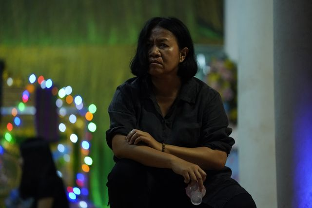
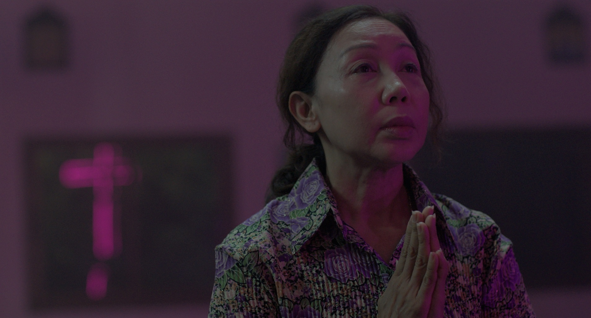
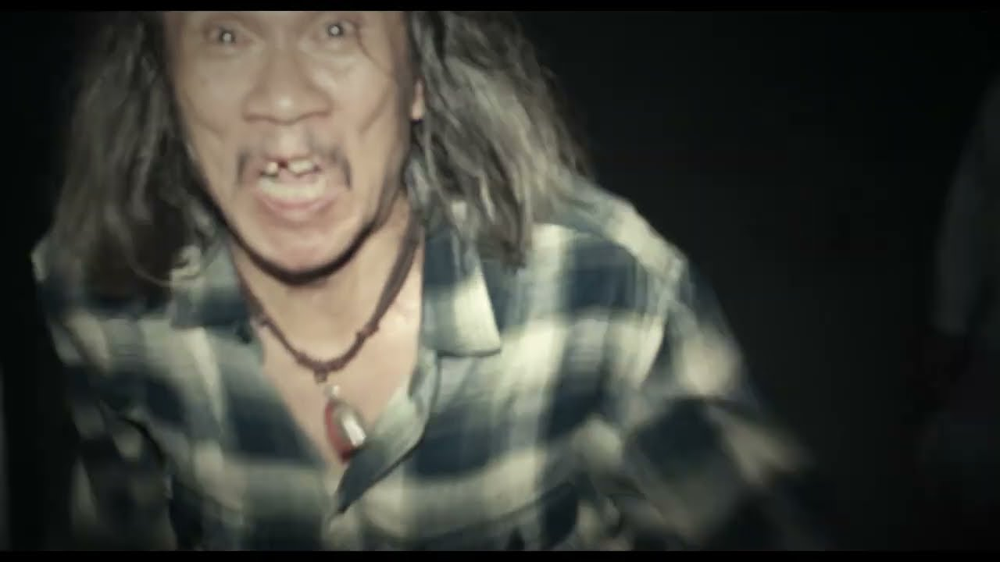
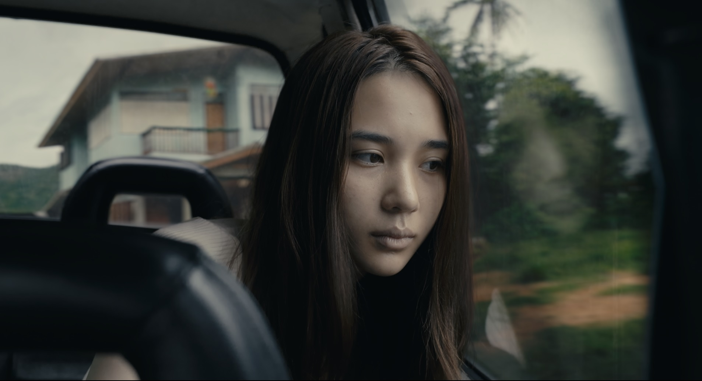

女神の継承
【物語のあらすじ】
タイ東北部イサーン地方。代々、女神「バヤン」を祀る祈祷師の一族に生まれたニム。
ある日、姉の娘であるミンが、何者かに取り憑かれたような異常行動を見せ始める。
当初は「女神の継承」の儀式だと思われたが、事態は想像を絶する凄惨な方向へと転がり始める。
ミンに宿ったのは女神なのか、それとも……。
「お前は、誰だ？」
カメラが捉え続けたのは、祈りも神も沈黙したままの、地獄のような真実だった。
血縁関係




交わってはいけない血が、一人の少女の中で目覚める。
【物語の起承転結 - 要約】
※各項目をクリックすると、物語のネタバレ・あらすじが表示されます。
起 聖域の亀裂
タイ東北部イサーン地方。祈祷師ニムは、土地の神「バヤン」をその身に宿し、村人の相談に乗る日々を送っていた。静寂が破られたのは、兄の葬儀の日。姪のミンが、まるで幼子のように振る舞い、あるいは凶暴に罵倒するといった、不可解な変貌を見せ始める。 当初は「バヤンの新たな継承者に選ばれた証（巫病）」と思われたが、ニムはその異変に、神聖な力とは対極にある「どす黒い何か」を感じ取っていた。
承 地獄のドキュメンタリー
ドキュメンタリー撮影班が密着を続ける中、ミンの奇行は昼夜を問わずエスカレートしていく。深夜のオフィスでの全裸徘徊、赤ん坊を連れ去ろうとする凶行、そして人肉への異常な執着……。 家中に設置された監視カメラには、関節を異様な方向に曲げ、獣のような動きで徘徊するミンの姿が記録されていた。それはもはや「神の継承」などではなく、底知れぬ悪意に体が乗っ取られていく過程そのものだった。
転 神の不在と呪いの正体
ニムはミンの正体を探るべく、一族が経営していた廃工場へと向かう。そこで判明したのは、ミンの父方の先祖が過去に犯した「大虐殺」のカルマ（業）だった。ミンの中にいたのは、虐殺された人々や動物たちの数万もの怨念（ヤサン）であった。 絶望的な状況下で、唯一の希望であったニムが儀式の前日に「神に捨てられた」かのような不可解な死を遂げる。導き手を失った撮影班と家族は、最強の霊能力者サンティに救いを求め、ミンを救うための「禁断の儀式」にすべてを賭ける。
結 すべての終わり、あるいは始まり（完全ネタバレ）
儀式の最中、母親ノイの「娘を想う心」を突いた悪霊の狡猾な罠により、封印は破られた。結界が崩壊した瞬間、その場にいたすべての人間が「獣」と化し、食らい合う地獄絵図が完成する。 カメラが最後に捉えたのは、放心状態で炎を見つめるミンの姿。そして、生前のニムが残した震えるような独白――「バヤンが私に憑いているのか、一度も感じたことがない」。 祈りが届くことはなく、ただ圧倒的な「闇」だけが勝利した瞬間の記録。
真相に触れる：伏線回収アーカイブを閲覧する （クリックで展開）
ARCHIVE: CURSED EVIDENCE（伏線回収アーカイブ）
「この車は赤色だ」というステッカー
序盤、ニムが乗る黒い車に貼られたステッカー。これは不運を避けるタイの風習だが、本作では「嘘を真実だと思い込もうとする人間の危うさ」の象徴。ラスト、母ノイが「神が降りた」と嘘の確信を抱いたことで、悲劇は決定打となった。
盲目の老婆の反応
市場の盲目の老婆がミンを避けたのは、彼女の中に潜む「数万の怨念の集合体」を本能的に察知したため。肉眼では見えない「圧倒的な悪意の質量」が、序盤から彼女を包囲していた。
ニムの誤認：マックという「盾」
ニムはお供え物の腐敗を見て、敵がマックではないと悟る。悪霊はマックのフリ（擬態）をすることで、ニムに「個人の霊」だと誤認させ、本質的な「数万の怨念」から目を逸らさせていた。
多重人格：露呈していた「実体」
老人の言動や獣の徘徊。これらは一人の霊では説明がつかない。実は序盤から「無数の怨念の通り道」である証拠は提示されていたが、マックへの先入観がその「異常な多重性」を隠蔽していた。
バヤン像の損壊と信仰の崩壊
首を斬られたバヤン像。これは悪霊による「神への勝利」の宣言であり、ニムにとっては「自分が信じてきた力の敗北」を突きつけられた瞬間。これが彼女の生きる意志を奪うトリガーとなった。
心を支えていた最後の糸
死の直前に遺した「一度も神を感じたことがない」という告白。その瞬間に彼女の魂は崩壊し、肉体もまた、守るべき拠り所を失い朽ち果てた。
タイに実在する信仰
1. 先祖霊「ピー」の掟
タイ全土、特にイサーン地方では仏教以前の「ピー（精霊）」信仰が今も息づく。家系ごとに守護霊を祀る風習は実在し、その怒りを買うことは「一族の破滅」を意味するほど重く受け止められている。
2. ランソンと巫病
「ランソン」とは神の依代。本人の意思に関わらず霊に選ばれ、凄惨な心身の苦痛（巫病）を経て就任する。劇中の「継承」を巡る悲劇は、現地の霊媒文化に伝わる「逃れられない運命」のメタファーである。
3. 言霊の呪術
「この車は赤色だ」というステッカーは、運命を言葉で書き換えるタイの日常的な呪術。嘘を真実として宣言し、災厄を欺こうとするこの風習は、実際に存在している文化なのだ。
【イサーンの精霊信仰】
1. 万物に宿る精霊「ピー」
タイの人口の約9割は仏教徒ですが、その根底には仏教伝来以前からの「アニミズム（精霊信仰）」が深く根付いています。木、川、家、そして一族の先祖に宿る精霊を彼らは「ピー」と呼び、畏怖の対象としています。
2. 祈祷師（ランソン）の役割
劇中のニムのような祈祷師は、コミュニティにおいて「精霊と人間を繋ぐ窓口」です。病気や不作をピーの怒りと捉え、儀式を通じて鎮める役割を担いますが、これは現代のタイでも地方都市を中心に実在する文化です。
3. 信仰の変質と「ヤサン」
映画で描かれた悲劇は、純粋な自然信仰が、人間側の「業（カルマ）」によって汚染された結果と言えます。劇中で語られた「あらゆるものに宿る怨念（ヤサン）」という概念は、古来の信仰が持つ「多神教的」な側面を極限まで恐怖に振り切った解釈です。
4. 信仰の起源：仏教伝来以前からの伏流
タイの精霊信仰「ピー（Phi）」は、紀元前にまで遡る仏教伝来以前の土着信仰に端を発しています。古代よりイサーンの人々は、森や川、山といった自然界のあらゆる場所に精霊が宿ると信じ、それらと調和して生きる道を選んできました。後に伝来した仏教と対立することなく、仏教が「来世や悟り」を説く一方で、ピー信仰は「現世の安全と利益」を司るという、独自の二重構造として共存・発展してきました。
5. 生活への多大な影響：精神的セーフティネット
現代のタイ社会においても、ピーは単なる空想ではなく、人々の行動を規定する「目に見えない隣人」です。
- 社会の秩序維持： 村の守護霊（ピー・プーター）や先祖の霊は、家族内の不和や不貞を罰する存在とされ、地域共同体の道徳やルールを守る抑止力となっています。
- 不安の解消と癒やし： 原因不明の病気や天災、事故に直面した際、人々はそれをピーの仕業と解釈し、儀式（タンブンや供物）を通じて「解決策」を見出します。これは現代医学や科学では補いきれない、心の平穏を保つための「精神的セーフティネット」として機能しています。
- 人生の節目： 出産、結婚、新築、開店など、人生のあらゆる重要な局面でピーに報告し、許可を得る習慣が、都市部・地方を問わず今も脈々と受け継がれています。
【信仰・血筋・呪術が好きな方へ】
ミッドサマー
『ヘレディタリー』と同じ監督。夜が来ない村での祝祭が、いつの間にか逃げ場のない惨劇へ。太陽の下で行われる不気味な儀式は、ヘレディタリーとはまた違った「明るい地獄」を味わえます。
インシディアス
引っ越し先で起きる怪異、そして昏睡状態の息子。原因は「家」ではなく「子供」にあった……。悪魔が肉体を奪おうとする描写や、あちら側の世界のビジュアルが非常に不気味な傑作シリーズです。
ジェーン・ドウの解剖
身元不明の美女の遺体を解剖していくうちに、遺体の内部から「あり得ないもの」が次々と発見される。医学と魔術が交差する、閉鎖空間での恐怖。ヘレディタリーの「歴史的・呪術的背景」が好きな人に最適です。